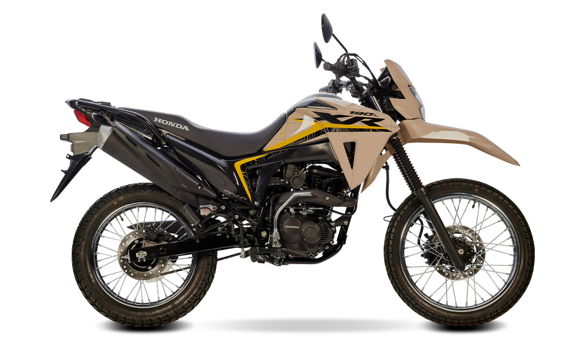

Ficha técnica del Samsung Galaxy S24 FE Samsung galaxy s24 fe Dimensiones y peso 77,3 x 162 x 8 milímetros 213 gramos Pantalla Dynamic AMOLED 2X 6,7 pulgadas Resolución Full HD Tasa de refresco adaptable 120 Hz 385 PPI 1.900 nits (pico) Procesador Exynos 2400e Ram 8 GB Almacenamiento 128 / 256 / 512 GB Cámara trasera Principal: 50 MP, f/1.8 Ultra gran angular: 12 MP, f/2.2 (123º) Telefoto: 8 MP, f/2.4, zoom óptico 3x Cámara frontal 10 MP, f/2.4 Batería 4.700 mAh Carga rápida 25 W Carga inalámbrica 15 W Carga inversa sistema operativo Android 14 One UI 6.1 Conectividad LTE, 5G WiFi 6e Bluetooth 5.3 Samsung DeX otros Certificación IP68 Altavoces estéreo Sensor de huellas óptico Precio Desde 10-20 Mil Pesos mexicanos
Procesador: CPU personalizada AMD Zen 2 de 8 núcleos a 3.8 GHz y GPU de 12 teraflops con RDNA 2. RAM: 16 GB GDDR6. Almacenamiento: SSD NVMe personalizado de 1 TB. Resolución: Soporte para resolución 4K nativa y HDR hasta 8K. Tasa de refresco: Hasta 120 FPS. Características adicionales: Xbox Velocity Architecture para tiempos de carga rápidos y Quick Resume, que permite cambiar entre múltiples juegos sin problemas. Conectividad: HDMI 2.1, USB 3.1 Gen 1, red inalámbrica de doble banda y Ethernet. Otros: Unidad óptica Blu-ray 4K, compatibilidad con tarjetas de expansión de almacenamiento de 1 TB. ofrece soporte para resolución 4K, HDR hasta 8K, y puede alcanzar hasta 120 FPS. También cuenta con tecnología Xbox Velocity Architecture para tiempos de carga rápidos y Quick Resume.

MOTOR Descripcion Desplazamiento Diámetro x carrera Potencia máxima Torque Relación de compresion Sistema de enfriamiento Sistema de lubricación Sistema de arranque Sistema de alimentación 4 tiempos, Monocilindrico, OHC 2 válvulas. 184.4 CC 61.000 X 63.096 mm 15.6 Hp / 8,500 rpm. 15.7 N.m / 6,000 rpm. 9.5:1 Por aire natural. Forzada por bomba trocoidal, con cárter húmedo. Eléctrico / pedal de arranque. Inyección electrónica PGM-FI ACEITE DE MOTOR Capacidad de aceite de motor Aceite recomendado: 1.0 l (al drenar ) / 1.2 l (al desarmar). 4T Honda GN4 / SAE: 10W-30 / API: SG ó superior / JASO T 903 : MA. ENCENDIDO Sistema de encendido Bujía std. / Holgura Completamentes transistorizado con ECM (Engine Control Module). CPR8EA - 9 (NGK) / 0.8 - 0.9 mm. TREN MOTRIZ Transmisión Embrague Traccion Final 5 Velocidades tipo retorno. Multidisco en baño de aceite, accionado por cable. Por cadena. SISTEMA ELECTRICO Sistema de carga Batería Sistema de iluminación Alternador monofásico, 165 W / 5,000 rpm. 12V - 6Ah / MTX7L-RS. Por alternador. SISTEMA DE COMBUSTIBLE Capacidad de tanque Velocidad ralentí CHASIS Tipo Cuna semidoble, tubular en acero. NEUMATICOS Delantero Trasero 90 / 90 - 19 M/C 52P (con cámara). 110 / 90 - 17 M/C 60P (con cámara). SUSPENSION DELANTERA Descripción Horquillas telescópicas, 161.5 mm de carrera. SUSPENSION TRASERA Descripción Brazo oscilante con un amortiguador central con 147 mm de carrera. FRENOS Delantero Trasero Hidráulico, disco sencillo de 240 mm, mordazas de 2 pistones. Hidráulico, disco sencillo de 220 mm, mordaza de 1 pistón. DIMENSIONES (mm) Largo / Ancho / Altura Distancia entre ejes Altura del asiento Distancia libre al suelo Peso en orden de marcha 2,082 / 812 / 1,126 1,351 835 247 134.0 kg (inc. Equipo estándar, todos los fluidos y tanque de combustible lleno).DESEMPEÑO Capacidad máxima de carga Cap. De carga en parilla 155 kg. (Incluye peso de conductor, pasajero, carga y accesorios).
